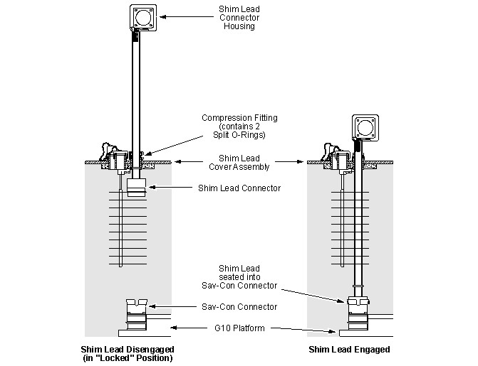
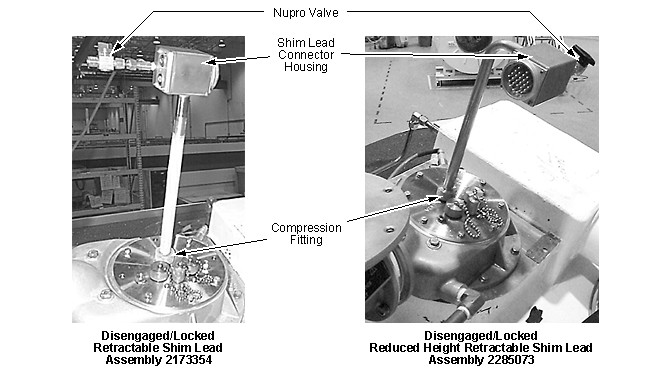
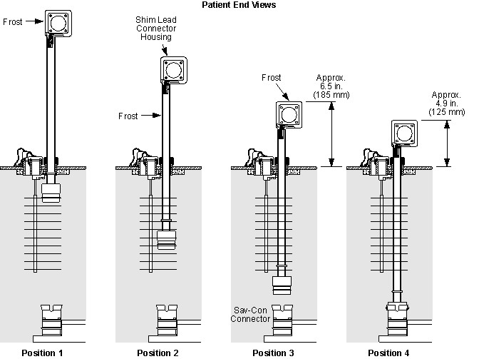

Operating Documentation
Direction 5440001-3, Rev# 6
Signa HDxt Service Methods
Module Version 2.0, Version Date 2/9/10
Operating Documentation |
| Required Persons | Preliminary Reqs | Procedure | Finalization |
|---|---|---|---|
| 2 | Included in 'Procedure' | .5 hour | Included in 'Procedure' |
During normal operation the Shim Lead Assembly will be in the “disengaged" position. See Illustration 1. To ramp or shim the magnet, engage the Shim Lead according to the “four position method" described below. See Illustration 3.
| NOTE: | These procedures are for use with both the Retractable Shim Lead Assembly (2173354) and the Reduced Height Retractable Shim Lead Assembly (2285073). |
Illustration 1: Shim Lead in Disengaged and Engaged Positions

| Item | Qty | Effectivity | Part# | Manufacturer | |
|---|---|---|---|---|---|
| Heat Gun | 1 | - | - | - | |
| HDx Service Platform (can use Universal Service Ladder/Platform 2319156 if service space ≥ 30 inches (762 mm)) | 1 | - | 5155291 (or 2319156) | - | |
| Service Methods documentation for the magnet/enclosures (available through the Common Document Library at gehealthcare.com or through your local GE Healthcare Service Representative) | 1 | - | - | - | |
| Condition | Reference | Effectivity |
|---|---|---|
The removal of some magnet enclosure components may be required to complete the Shim Lead Engagement and Disengagement procedures. Refer to Upper and Side Enclosure Removal (Wide Open enclosures) or to Introduction to HDe & HDx Enclosuresand the appropriate Service Methods documentation (available through the Common Document Library at gehealthcare.com or through your local GE Healthcare Service Representative) before continuing with the Shim Lead Engagement and Disengagement procedures if cover removal is required. | - | |
(continued) | - |
Loosen the Shim Lead compression fitting. Make sure the Shim Lead is held locked in the up position. See Illustration 2.
Illustration 2: Disengaged & Locked Shim Leads

| ||||
| Potential Magnet Quench | ||||
| A closed Nupro Valve during Shim Lead engagement can cause a magnet quench. | ||||
| Make sure the Nupro Valve is fully open and the valve is frosted before slowly engaging the Shim Lead. Do not remove the Shim Lead's Orifice Cap that controls helium gas flow. |
Fully open the NuPro valve to the Connector Housing on top of the Shim Lead and wait until the housing begins to frost. See Illustration 2. The Shim Lead should be in Position 1 shown in Illustration 3.
Illustration 3: Shim Lead Engage Sequence

Pull up slightly on the Shim Lead Connector Housing and rotate clockwise to “unlock" the assembly.
| NOTE: | If using the 2.5 meter (98 inch) ceiling height Shim Lead Assembly (2285073), rotate the Shim Lead Assembly 180° after “unlocking" so that the Connector Housing is at its lowest orientation, as shown in Illustration 2. |
| ||||
| Potential Magnet Quench | ||||
| Inserting Shim Lead faster than it cools to magnet temperature can cause a magnet quench. | ||||
| Use the “four positions" when inserting Shim Lead, proceeding slowly between positions when pushing down on the Shim Lead Assembly. |
Carefully push down on the Shim Lead Connector Housing until the assembly is at Position 2 in Illustration 3.
Leave the Shim Lead in Position 2 for approximately 2 minutes until the shaft begins to frost.
Warm the compression fitting with a heat gun to thaw its o-ring. See Illustration 2
Carefully push down on the Shim Lead Connector Housing until the assembly is at Position 3 in Illustration 3.
Leave the Shim Lead in Position 3 for approximately 2 minutes until the Shim Lead Box begins to frost.
Warm the compression fitting with a heat gun to thaw its o-ring.
Carefully push down on the Shim Lead Connector Housing until the Shim Lead contacts the Sav-Con Connector as shown in Position 4 in Illustration 3.
| NOTE: | The Shim Lead Connector and the mating G10 Sav-Con Connector are keyed and can only be mated in one position. |
Seat the Shim Lead fully, after contact is felt, by continuing to push on the Shim Lead Connector Housing with moderate pressure. To fully engage, the Shim Lead should move downwards approximately .25 inch (6 mm), after contact is felt.
Tighten the Shim Lead compression fitting.
Close the NuPro valve.
After seating the Shim Lead, do electrical checks per Magnet Electrical Checks.
Remove ice around the Shim Lead Assembly and Shim Lead compression fitting with a heat gun, if required. See Illustration 2
Loosen the Shim Lead compression fitting.
Pull up firmly from the underside of the Shim Lead Connector Housing until the Shim Lead Assembly unseats. See Illustration 1 and Illustration 2.
Hand tighten the Shim Lead compression fitting.
Check for leaks.
No finalization steps.